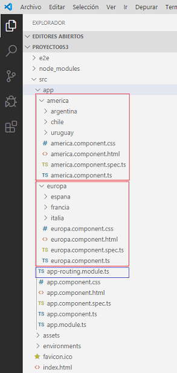
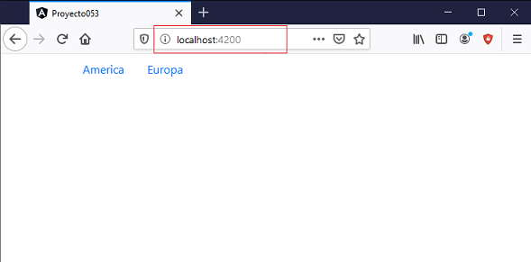
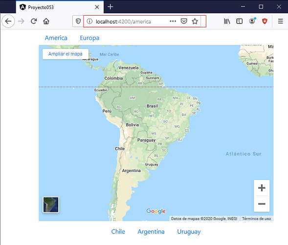
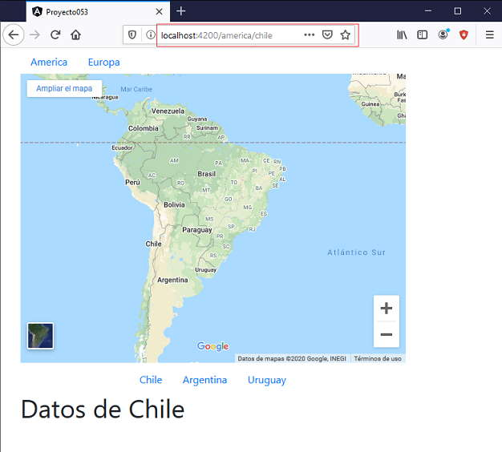

En un comienzo trabajamos el desarrollo de aplicaciones Angular componiendo la misma como un conjunto de componentes todas en la misma ruta, por ejemplo:
https://www.sitio.com/
Luego vimos que cuando la aplicación comienza a ser más compleja coviene agrupar sus funcionalidades en distintas rutas, con o si parámetros:
https://www.sitio.com/inicio https://www.sitio.com/clientes https://www.sitio.com/contacto https://www.sitio.com/articulos
Esta forma de organizar las rutas nos permite crear un sitio más grande, pero ahora veremos que podemos crear rutas anidadas, por ejemplo:
https://www.sitio.com/inicio https://www.sitio.com/clientes/mayoristas https://www.sitio.com/clientes/minoristas
Veremos que Angular requiere una sintaxis específica cuando definimos el arreglo Routes para indicar que se trata de una ruta anidada.
Confeccionar una aplicación que muestre una barra de navegación (emplear Bootstrap) con 2 rutas: 'America' y 'Europa'.
Cuando se selecciona 'America', mostrar el mapa de 'América' y una barra de navegación con 3 paises americanos, hacer lo mismo si se elije Europa, emplear rutas anidadas para cada país, de tal forma que se acceda a cada país con la siguiente sintaxis:
https://www.sitio.com https://www.sitio.com/america https://www.sitio.com/america/chile https://www.sitio.com/america/argentina https://www.sitio.com/america/uruguay https://www.sitio.com/europa https://www.sitio.com/europa/espana https://www.sitio.com/europa/francia https://www.sitio.com/europa/italia
Crearemos primero el proyecto y debemos tener cuidado de indicar que utilizaremos rutas en la aplicación Angular:
ng new proyecto053 --routing
Crearemos 2 componentes para cada continente y 6 componentes más para cada país:
ng g c america ng g c america/chile ng g c america/argentina ng g c america/uruguay ng g c europa ng g c europa/espana ng g c europa/francia ng g c europa/italia
Podíamos crear todas las componentes en la misma altura y no crear subcarpetas para cada país, pero queda mucho más ordenada nuestra aplicación si comenzamos a agrupar las componentes en distintas carpetas y subcarpetas en forma jerárquica. Angular CLI crea automáticamente una subcarpeta cuando no existe al utilizar la sintaxis:
ng g c america/chile
Se crea la carpeta 'america' y dentro de la misma se guardan los cuatro archivos asociados a la componente 'chile'.
Podemos ver en el editor de texto las 8 componentes creadas:
El caracter 'ñ' no se puede utilizar como selector: Selector (app-españa) is invalid.
Procedemos a modificar el archivo 'app-routing.module.ts' definiendo las rutas principales y las anidadas:
import { NgModule } from '@angular/core';
import { Routes, RouterModule } from '@angular/router';
import { AmericaComponent } from './america/america.component';
import { ChileComponent } from './america/chile/chile.component';
import { ArgentinaComponent } from './america/argentina/argentina.component';
import { UruguayComponent } from './america/uruguay/uruguay.component';
import { EuropaComponent } from './europa/europa.component';
import { EspanaComponent } from './europa/espana/espana.component';
import { FranciaComponent } from './europa/francia/francia.component';
import { ItaliaComponent } from './europa/italia/italia.component';
const routes: Routes = [
{
path: 'america',
component: AmericaComponent,
children: [
{
path: 'chile',
component: ChileComponent
},
{
path: 'argentina',
component: ArgentinaComponent
},
{
path: 'uruguay',
component: UruguayComponent
}
]
},
{
path: 'europa',
component: EuropaComponent,
children: [
{
path: 'espana',
component: EspanaComponent
},
{
path: 'francia',
component: FranciaComponent
},
{
path: 'italia',
component: ItaliaComponent
}
]
}
];
@NgModule({
imports: [RouterModule.forRoot(routes)],
exports: [RouterModule]
})
export class AppRoutingModule { }
Agregamos en cada objeto que tiene rutas anidadas la propiedad 'children', la cual es un arreglo de objetos donde definimos todas las rutas anidadas.
Luego podemos indicar en el navegador una ruta principal:
https://www.sitio.com/america
Pero también podemos acceder a una ruta anidada con la sintaxis:
https://www.sitio.com/america/chile
Agreguemos Bootstrap a nuestra aplicación 'index.html':
<!doctype html>
<html lang="en">
<head>
<meta charset="utf-8">
<title>Proyecto053</title>
<base href="/">
<meta name="viewport" content="width=device-width, initial-scale=1">
<link rel="icon" type="image/x-icon" href="favicon.ico">
<link rel="stylesheet" href="https://stackpath.bootstrapcdn.com/bootstrap/4.4.1/css/bootstrap.min.css"
integrity="sha384-Vkoo8x4CGsO3+Hhxv8T/Q5PaXtkKtu6ug5TOeNV6gBiFeWPGFN9MuhOf23Q9Ifjh" crossorigin="anonymous">
</head>
<body>
<app-root></app-root>
<script src="https://code.jquery.com/jquery-3.4.1.slim.min.js"
integrity="sha384-J6qa4849blE2+poT4WnyKhv5vZF5SrPo0iEjwBvKU7imGFAV0wwj1yYfoRSJoZ+n"
crossorigin="anonymous"></script>
<script src="https://cdn.jsdelivr.net/npm/popper.js@1.16.0/dist/umd/popper.min.js"
integrity="sha384-Q6E9RHvbIyZFJoft+2mJbHaEWldlvI9IOYy5n3zV9zzTtmI3UksdQRVvoxMfooAo"
crossorigin="anonymous"></script>
<script src="https://stackpath.bootstrapcdn.com/bootstrap/4.4.1/js/bootstrap.min.js"
integrity="sha384-wfSDF2E50Y2D1uUdj0O3uMBJnjuUD4Ih7YwaYd1iqfktj0Uod8GCExl3Og8ifwB6"
crossorigin="anonymous"></script>
</body>
</html>
Procedemos a modifar la componente principal que nos genera Angular 'app.component.html':
<div class="container">
<div class="row">
<ul class="nav justify-content-center">
<li class="nav-item">
<a class="nav-link" routerLink="america">America</a>
</li>
<li class="nav-item">
<a class="nav-link" routerLink="europa">Europa</a>
</li>
</ul>
</div>
<div class="row">
<router-outlet></router-outlet>
</div>
</div>
La directiva 'router-outlet' es indispensable para que se muestren alguna de las dos componentes 'AmericaComponent' o 'EuropaComponent' según que enlace se seleccione.
Cuando se selecciona la ruta 'america' se carga la componentes 'AmericaComponent', modificamos la vista de dicha componente 'AmericaComponent.html'
<iframe src="https://www.google.com/maps/embed?pb=!1m14!1m12!1m3!1d31536306.714862086!2d-54.01447990393665!3d-20.38062741924525!2m3!1f0!2f0!3f0!3m2!1i1024!2i768!4f13.1!5e0!3m2!1ses!2sar!4v1583676893900!5m2!1ses!2sar" width="600" height="450" frameborder="0" style="border:0;" allowfullscreen=""></iframe>
<ul class="nav justify-content-center">
<li class="nav-item">
<a class="nav-link" routerLink="chile">Chile</a>
</li>
<li class="nav-item">
<a class="nav-link" routerLink="argentina">Argentina</a>
</li>
<li class="nav-item">
<a class="nav-link" routerLink="uruguay">Uruguay</a>
</li>
</ul>
<router-outlet></router-outlet>
Disponemos tres enlaces hacia las rutas anidadas, recordemos que esta componente se activa cuando se seleccionó la ruta 'america'.
También esta componente dispone la etiqueta 'router-outlet' donde deben visualizarse las componentes 'ArgentinaComponent', 'ChileComponent' o 'UruguayComponent'.
Exactamente lo mismo hacemos para crear la componente 'EuropaComponent.html':
<iframe src="https://www.google.com/maps/embed?pb=!1m14!1m12!1m3!1d9880418.608500127!2d2.640727530399596!3d45.69187171781666!2m3!1f0!2f0!3f0!3m2!1i1024!2i768!4f13.1!5e0!3m2!1ses!2sar!4v1583677509059!5m2!1ses!2sar" width="600" height="450" frameborder="0" style="border:0;" allowfullscreen=""></iframe>
<ul class="nav justify-content-center">
<li class="nav-item">
<a class="nav-link" routerLink="espana">España</a>
</li>
<li class="nav-item">
<a class="nav-link" routerLink="francia">Francia</a>
</li>
<li class="nav-item">
<a class="nav-link" routerLink="italia">Italia</a>
</li>
</ul>
<router-outlet></router-outlet>
Ya tenemos prácticamente finalizado el ejemplo de rutas anidadas con Angular, podemos modicar las vistas de las componentes de cada país:
chile.component.html argentina.component.html uruguay.component.html espana.component.html francia.component.html italia.component.html
Si ingresamos a la raiz del sitio tenemos:
Si ingresamos a la ruta 'america' tenemos como resultado:
Finalmente si ingresamos a una ruta anidada:
Podemos probar esta aplicación en la web aquí.